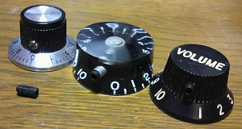
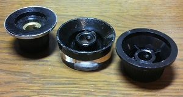

スプリットシャフト用ノブをソリッドシャフト用に改造
2012年05月16日 カテゴリー：実験等
ボリュームポットのシャフト径はインチサイズ（1/4インチ＝6.35mm）やミリサイズ（6mm）があります。さらにシャフトの形もスプリットシャフト（ローレットシャフト、ギザギザがついたシャフト）やソリッドシャフト（ギザギザなしのシャフト）、Dシャフト（"D"の形のシャフト）とかいうのもあって、ノブが適合しないことがよくあります。
私のギターには東京コスモス製密閉型ポット（6mmソリッドシャフト）を使用しているんですが、目盛りつきノブで気に入ったのがないため、スプリットシャフト用ノブを加工してソリッドシャフトに取り付けできるようにしてみました（下写真）。

一番左のノブはGarrettaudioで買った目盛り付きソリッドシャフト用ノブなんですが、目盛りの向きが逆なのと360度を10等分してあるのでギター向きではなかったです。
真ん中のノブはギブソンスタイルのスピードノブ、右のはフェンダーストラトスタイルのノブです。シャフトが入る穴は6mmのドリルでギザギザを取り、横からM3規格のネジが入るネジ穴を開けました。ネジ穴を開けるにはタップという専用工具が必要なのですが、それを持っていれば簡単な加工です。ネジはホーローセット（イモネジ、止めねじ）というもので、ホームセンターで購入しました。
ノブの中身は下写真です。

結構スカスカなので強度は大丈夫か心配でしたが、特に問題ないようです。エフェクターのノブにギター用ノブを使うのも面白いかなと思います。